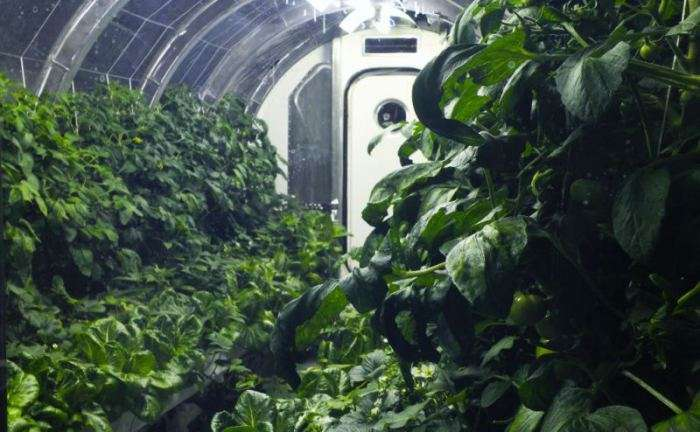
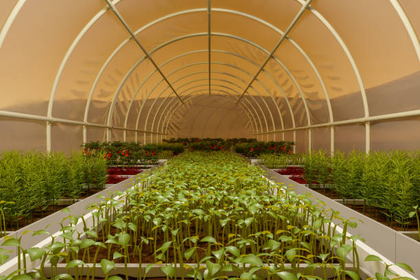
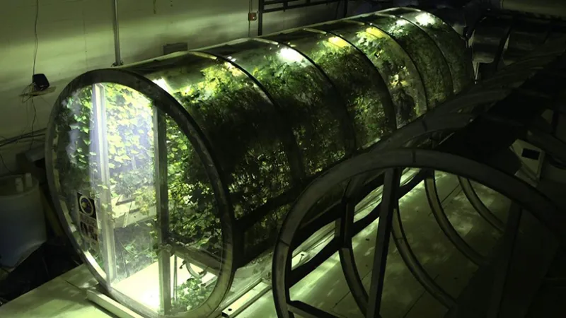

The question of "What are we going to eat up there on Mars?" is a valid one, as this will prove to be no little feat. The puzzle of securing a sustainable food source on a planet with no oxygen is that has stumped our scientists for years.

A Protoype "Mars Greenhouse" Operating in the Mojave desert
Artificial Atmospheres are created in a clear tubular tent-like structure and used to create a controlled climate environment where the temperature and humidity can be set to maximize the success of any plant grown within. Massive Sun Lamps provide the crop with vitamin D and other nutrients necessary for their development. These Atmosphere can be completely unmanned with robots checking on the state of the crop and gently harvesting it when the time is right and preparing the soil seasonly.

An artists rendering of an Artificial Atmosphere on Mars
Our botanists are working to develop a "super food": a plant with hyper-enriching minerals and vitamins that could replace a full meal with a bite, which would be used to sustain teams of scientists for longer stays on Mars. This would also reduce space for food storage and allow for larger crews to make the trip to Mars. Studies are ongoing but if a super plant can be created, it will be among the first seeds to make the trip up to Mars.

A botany research lab operating under the Project science division
Sources for further study
World Flora Online Natural History Museum Native Plants of North America"The darkest places in hell are reserved for those who maintain their neutrality in times of moral crisis". - Dante Alighieri